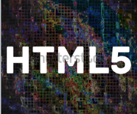
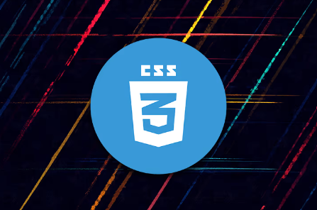
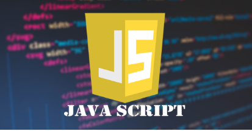

Software
1- computerprogramma’s
2- applicaties
3- besturingssystemen
Het is een geheel van computerprogramma’s met data die zowel bewerkingen als taken uitvoeren. Software is niet tastbaar, het heeft geen materiële component, maar zorgt er juist voor dat tastbare apparaten werken en doen waarvoor ze zijn ontworpen. Bovendien zorgt software ervoor dat jij met deze apparaten kunt communiceren en ze kunt vertellen wat je wilt doen.
Zie het als de draadjes die de poppen laten dansen.
Computers, smartphones en tablets maken gebruik van software, maar allerlei gebruiksartikelen ook. Als de software in een apparaat of gebruiksartikel geïntegreerd is, zoals bij een televisie, magnetron, auto of wasmachine, dan hebben we het over embedded software, of ingebouwde software.
Nu snap je ook meteen het verschil tussen software en hardware. Hardware is iets materieels. Denk bijvoorbeeld aan de fysieke componenten van een computer, het beeldscherm, de computerkast en ook de niet zichtbare elementen waaronder de videokaart, het moederbord en de harde schijf. Software daarentegen stuurt altijd de hardware componenten aan en is nodig om andere programma’s zoals een foto-editor of een boekhoudprogramma op een computersysteem te laten draaien.
HTML
HTML staat voor Hyper Text Markup Language, Een programmeertaal die wordt gebruikt voor het schrijven van webpagina's. Hoewel HTML ook deels de vormgeving en styling kan verzorgen, doen we dit meestal met een andere taal: CSS (Cascading Style Sheet).
CSS
Cascading Style Sheets, afgekort CSS is een programeertaal die zorgt voor de opmaak van HTML bestanden. Aan de basis van elke pagina op een website zit een HTML bestand, dat zorgt voor alle inhoud die je te zien krijgt (tekst, afbeeldingen, links..) . Je denkt nu misschien, waarom heb ik CSS dan nodig? CSS zorgt er namelijk voor dat je die HTML code vorm kan geven.
JavaScript kan HTML en CSS programma’s updaten en veranderen. Het kan berekeningen maken, data manipuleren en valideren. De programmering bepaalt of dat dit alles automatisch gebeurt of getriggerd wordt door een handeling van de bezoeker. Dit laatste wil zeggen, een actie van de bezoeker geeft de aanzet voor de uitvoering van het script en veroorzaakt een ‘gebeurtenis’ op de webpagina. Bijvoorbeeld: Bij een muisklik of bij het hoveren over een knop door de bezoeker veranderen kleuren op de webpagina, of worden teksten uitgerold (>>> lees meer, menu dropdown), verschijnen pop-ups of worden animaties of effecten gestart. Of na het invullen van getallen worden berekeningen gemaakt
